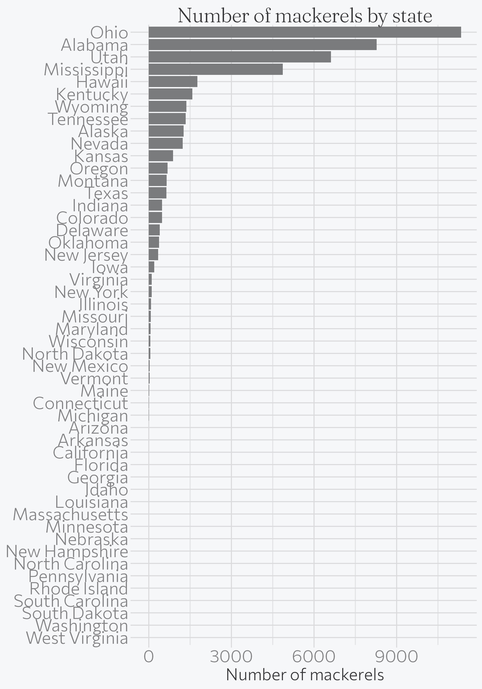

library(tidyverse)
library(tidytext)
theme_set(brand_theme(18))Can You Find The Fish In State Names?
r
riddler
The recent Riddler classic offered this intriguing challenge: Ohio is the only state whose name doesnt share any letters with the word “mackerel.” Its strange, but its true.
NoteCode updated
This post was originally written in 2020 and was last rendered under R 4.0.4. The code has been minimally updated to run under R 4.6.1: the keep argument of dplyr::group_split(), defunct since dplyr 1.0.0, was renamed to .keep. The analysis and its conclusions are unchanged.
The recent Riddler classic offered this intriguing challenge:
Ohio is the only state whose name doesnt share any letters with the word “mackerel.” Its strange, but its true.
But that isnt the only pairing of a state and a word you can say that about — its not even the only fish! Kentucky has “goldfish” to itself, Montana has “jellyfish” and Delaware has “monkfish,” just to name a few.
What is the longest “mackerel?” That is, what is the longest word that doesnt share any letters with exactly one state? (If multiple “mackerels” are tied for being the longest, can you find them all?)
Extra credit: Which state has the most “mackerels?” That is, which state has the most words for which it is the only state without any letters in common with those words?
Given the provided dictionary, we need to find all the words that do not have overlapping letters with state names (specifically, mackerels are ones with exactly one state with which it does not share letters).
In order to do that, I tokenized each word at the character-level, then compared the list of dictionary words to all the state names to find all non-overlapping pairs of words.
First we retrieve the dictionary of words. R already includes state names as the state.name constant.
# get list of words
all_words <- tibble(word = readLines("https://norvig.com/ngrams/word.list"))
states <- tibble(word = state.name)Next I use tidytext::unnest_tokens() to tokenize at the character level. Since it doesn’t matter how many times the word uses a specific character, I just need each distinct appearance.1 From here I nest() the data frame so each word is a row and all their unique characters are in separate characte vectors.
# combine together
tokens <- bind_rows(
all_words = all_words,
states = states,
.id = "source"
) %>%
# tokenize by character
unnest_tokens(
output = letter,
input = word,
token = "characters",
drop = FALSE
) %>%
# remove duplicates
distinct() %>%
# store data as one row per word and all unique letters as character vectors
nest(cols = c(letter)) %>%
mutate(letters = map(cols, ~ .$letter)) %>%
select(-cols) %>%
# split by source
group_split(source, .keep = FALSE)
tokens<list_of<
tbl_df<
word : character
letters: list
>
>[2]>
[[1]]
# A tibble: 263,533 × 2
word letters
<chr> <list>
1 aa <chr [1]>
2 aah <chr [2]>
3 aahed <chr [4]>
4 aahing <chr [5]>
5 aahs <chr [3]>
6 aal <chr [2]>
7 aalii <chr [3]>
8 aaliis <chr [4]>
9 aals <chr [3]>
10 aardvark <chr [5]>
# ℹ 263,523 more rows
[[2]]
# A tibble: 50 × 2
word letters
<chr> <list>
1 Alabama <chr [4]>
2 Alaska <chr [4]>
3 Arizona <chr [6]>
4 Arkansas <chr [5]>
5 California <chr [8]>
6 Colorado <chr [6]>
7 Connecticut <chr [7]>
8 Delaware <chr [6]>
9 Florida <chr [7]>
10 Georgia <chr [6]>
# ℹ 40 more rowsFrom here, I need to form all possible combinations between each dictionary word and state name. expand.grid() lets me form all possible combinations, while a couple of left_join() operations bring together all the character tokens.
# form all possible cominations of the dictionary and state names
tokens_combo <- expand.grid(
word_all = tokens[[1]]$word,
word_state = tokens[[2]]$word
) %>%
left_join(tokens[[1]], by = c("word_all" = "word")) %>%
rename(letters_all = letters) %>%
left_join(tokens[[2]], by = c("word_state" = "word")) %>%
rename(letters_state = letters) %>%
as_tibble()
tokens_combo# A tibble: 13,176,650 × 4
word_all word_state letters_all letters_state
<chr> <chr> <list> <list>
1 aa Alabama <chr [1]> <chr [4]>
2 aah Alabama <chr [2]> <chr [4]>
3 aahed Alabama <chr [4]> <chr [4]>
4 aahing Alabama <chr [5]> <chr [4]>
5 aahs Alabama <chr [3]> <chr [4]>
6 aal Alabama <chr [2]> <chr [4]>
7 aalii Alabama <chr [3]> <chr [4]>
8 aaliis Alabama <chr [4]> <chr [4]>
9 aals Alabama <chr [3]> <chr [4]>
10 aardvark Alabama <chr [5]> <chr [4]>
# ℹ 13,176,640 more rowsThe tricky part was finding the correct syntax to check all the characters in the dictionary word individually – if any of the letters could be found in the state name, we did not have a valid match. Combining %in% with the any() function allows us to do just that.
# only keep rows where the dictionary word does not have any letters in common
# with the state name
words_not_in_common <- tokens_combo %>%
mutate(any_letters_in_common = map2_lgl(letters_all,
letters_state,
~ any(.x %in% .y == TRUE))) %>%
filter(!any_letters_in_common)Turns out that even with millions of pairs to iterate through, it only took about 40 seconds to complete the comparisons on my computer.
From here, we just need to find all the mackerels and check their word length.
# check to see if a word has multiple mackerels
mackerels <- words_not_in_common %>%
count(word_all) %>%
# only keep words with a single mackerel
filter(n == 1) %>%
# what are their length?
left_join(words_not_in_common) %>%
mutate(length = map_dbl(word_all, nchar)) %>%
select(-starts_with("letters"), -any_letters_in_common) %>%
arrange(-length)Joining with `by = join_by(word_all)`# what are the longest mackerels?
mackerels %>%
filter(length == max(length)) %>%
knitr::kable(col.names = c(
"Word", "Number of mackerels",
"State", "Word length"
))| Word | Number of mackerels | State | Word length |
|---|---|---|---|
| counterproductivenesses | 1 | Alabama | 23 |
| hydrochlorofluorocarbon | 1 | Mississippi | 23 |
2 words tie for the longest mackerel at 23 characters each.
As for the extra credit, which states have the most mackerels? Given what we already calculated, let’s instead aggregate total number of mackerels for each state.
# join with states info
state_mackerels <- mackerels %>%
count(word_state) %>%
# add back in states which have no mackerels
full_join(states, by = c("word_state" = "word")) %>%
mutate(n = ifelse(is.na(n), 0, n)) %>%
arrange(-n, word_state)
ggplot(
data = state_mackerels,
mapping = aes(
x = factor(word_state, levels = word_state) %>% fct_rev(),
y = n
)
) +
geom_col() +
coord_flip() +
labs(
title = "Number of mackerels by state",
x = NULL,
y = "Number of mackerels"
)
Ohio is the clear winner; rounding out the top four are Alabama, Utah, and Mississippi.
Session Info
─ Session info ───────────────────────────────────────────────────────────────
setting value
version R version 4.6.1 (2026-06-24)
os macOS Tahoe 26.6.1
system aarch64, darwin23
ui X11
language (EN)
collate en_US.UTF-8
ctype en_US.UTF-8
tz America/New_York
date 2026-08-12
pandoc 3.4 @ /usr/local/bin/ (via rmarkdown)
quarto 1.10.18 @ /usr/local/bin/quarto
─ Packages ───────────────────────────────────────────────────────────────────
! package * version date (UTC) lib source
P brand.yml 0.1.0 2025-11-06 [?] RSPM
P cli 3.6.6 2026-04-09 [?] RSPM
P codetools 0.2-20 2024-03-31 [?] CRAN (R 4.6.1)
P digest 0.6.39 2025-11-19 [?] RSPM
P dplyr * 1.2.1 2026-04-03 [?] RSPM
P evaluate 1.0.5 2025-08-27 [?] RSPM
P farver 2.1.2 2024-05-13 [?] RSPM
P fastmap 1.2.0 2024-05-15 [?] RSPM
P forcats * 1.0.1 2025-09-25 [?] RSPM
P generics 0.1.4 2025-05-09 [?] RSPM
P ggplot2 * 4.0.3 2026-04-22 [?] RSPM
P glue 1.8.1 2026-04-17 [?] RSPM
P gtable 0.3.6 2024-10-25 [?] RSPM
P hms 1.1.4 2025-10-17 [?] RSPM
P htmltools 0.5.9 2025-12-04 [?] RSPM
P janeaustenr 1.0.0 2022-08-26 [?] RSPM
P jsonlite 2.0.0 2025-03-27 [?] RSPM
P knitr 1.51 2025-12-20 [?] RSPM
P labeling 0.4.3 2023-08-29 [?] RSPM
P lattice 0.22-9 2026-02-09 [?] CRAN (R 4.6.1)
P lifecycle 1.0.5 2026-01-08 [?] RSPM
P lubridate * 1.9.5 2026-02-04 [?] RSPM
P magrittr 2.0.5 2026-04-04 [?] RSPM
P Matrix 1.7-5 2026-03-21 [?] CRAN (R 4.6.1)
P otel 0.2.0 2025-08-29 [?] RSPM
P pillar 1.11.1 2025-09-17 [?] RSPM
P pkgconfig 2.0.3 2019-09-22 [?] RSPM
P prismatic 1.1.2 2024-04-10 [?] RSPM
P purrr * 1.2.2 2026-04-10 [?] RSPM
P R6 2.6.1 2025-02-15 [?] RSPM
P ragg 1.5.2 2026-03-23 [?] RSPM
P RColorBrewer 1.1-3 2022-04-03 [?] RSPM
P Rcpp 1.1.2 2026-07-05 [?] RSPM
P readr * 2.2.0 2026-02-19 [?] RSPM
renv 1.2.4 2026-08-03 [1] RSPM (R 4.6.0)
P rlang 1.3.0 2026-07-05 [?] RSPM
P rmarkdown 2.31 2026-03-26 [?] RSPM
P S7 0.2.2 2026-04-22 [?] RSPM
P scales 1.4.0 2025-04-24 [?] RSPM
P sessioninfo 1.2.4 2026-06-04 [?] RSPM
P SnowballC 0.7.1 2023-04-25 [?] RSPM
P stringi 1.8.9 2026-08-04 [?] RSPM
P stringr * 1.6.0 2025-11-04 [?] RSPM
P systemfonts 1.3.2 2026-03-05 [?] RSPM
P textshaping 1.0.5 2026-03-06 [?] RSPM
P tibble * 3.3.1 2026-01-11 [?] RSPM
P tidyr * 1.3.2 2025-12-19 [?] RSPM
P tidyselect 1.2.1 2024-03-11 [?] RSPM
P tidytext * 0.4.3 2025-07-25 [?] RSPM
P tidyverse * 2.0.0 2023-02-22 [?] RSPM
P timechange 0.4.0 2026-01-29 [?] RSPM
P tokenizers 0.3.0 2022-12-22 [?] RSPM
P tzdb 0.5.0 2025-03-15 [?] RSPM
P utf8 1.2.6 2025-06-08 [?] RSPM
P vctrs 0.7.3 2026-04-11 [?] RSPM
P withr 3.0.3 2026-06-19 [?] RSPM
P xfun 0.60 2026-07-09 [?] RSPM
P yaml 2.3.12 2025-12-10 [?] RSPM
[1] /Users/bcs88/Projects/personal-site/renv/library/macos/R-4.6/aarch64-apple-darwin23
[2] /Users/bcs88/Library/Caches/org.R-project.R/R/renv/sandbox/macos/R-4.6/aarch64-apple-darwin23/46003b10
* ── Packages attached to the search path.
P ── Loaded and on-disk path mismatch.
──────────────────────────────────────────────────────────────────────────────Footnotes
unnest_tokens()automatically converts the text to lowercase, so I don’t need to convertstate.namefirst.↩︎